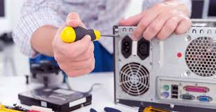

Manteniment
Fem un manteniment complet del ordinador o portatil que necesiti ja sigui de forma personal o per a la teva empresa, també oferim el material necesari per fer una
reparacio completa del seu equip informatic, reparacio del sistema operatiu tant Windows com Ubuntu, canvi
de components de portatil i ordinador de forma gratuita si son comprats a la nostre botiga.

Implementament de les noves tecnologies
Fem un manteniment complet de l'ordinador o portàtil que necessiti sigui de forma personal o per a la teva empresa, també oferim el material necessari per fer una reparació completa del seu equip informàtic, reparació del sistema operatiu tant Windows com Ubuntu, canvi de components de portàtil i ordinador de forma gratuïta sí que són comprats a la nostra botiga.
Pgina web
Creació i publicació de la pgina web, oferim el hosting i informació necessria per poder crear la vostra pgina web al vostre gust. Tot aix貌 s'ha de parlar ja sigui en presencial a la nostra botiga o pels tel猫fons que es mostren a la part superior de la pgina web.
Pla mensual
Subscripció mensual on entra el segur i el manteniment del cablejat, manteniment dels equips informàtics per un preu mensual, on volem oferir que en cas de tenir qualsevol accident puguis reparar el teu entorn de forma gratuïta.